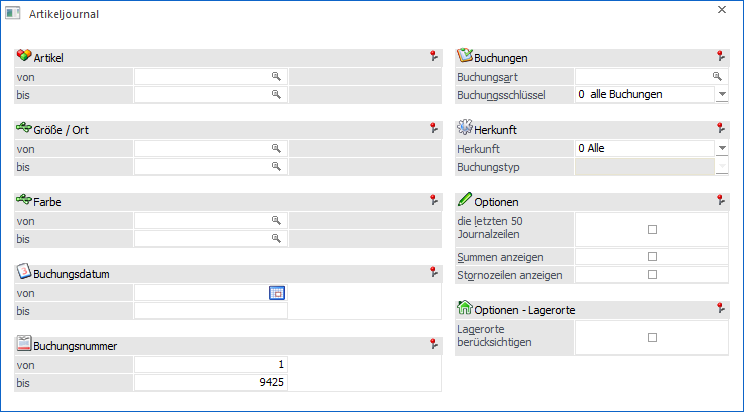
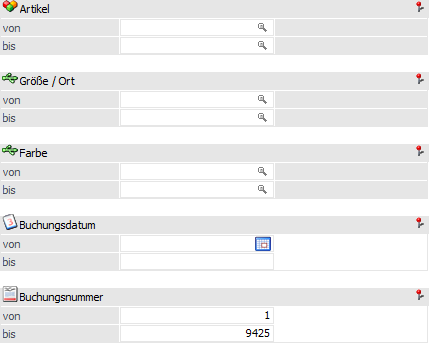
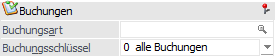
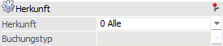
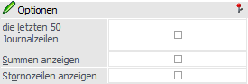
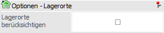
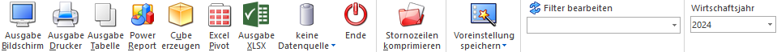

Im Artikeljournal, welches über den Menüpunkt…
1 WinLine FAKT
1 Auswertungen
1 Artikellisten
1 Artikeljournal
… aufgerufen wird, können alle erfassten Buchungszeilen angezeigt werden.

Die Ausgabe kann durch folgende Kriterien eingeschränkt bzw. beeinflusst werden:
Grundselektion

Im Bereich der Selektion kann die Ausgabe eingeschränkt werden.
Ø Artikel von / bis
An dieser Stelle kann nach den Artikeln eingeschränkt werden, welche ausgewertet werden sollen. Bleiben die Felder leer so werden alle Artikel in die Auswertung einbezogen.
Hinweis
Wird im Feld "Artikel von / bis" z.B. nur eine Artikelnummer eingegeben und dieser Artikel hat auch noch Ausprägungen, so werden alle Ausprägungen automatisch mit angedruckt. Nur wenn während des Anklickens des entsprechenden "Ausgabe"-Buttons die STRG-Taste gedrückt wird, wird nur der Hauptartikel alleine ausgewertet.
Ø Ausprägung 1 von / bis (hier "Größe / Ort")
Zusätzlich kann eine Einschränkung auf die Ausprägung 1 vorgenommen werden. Sobald eine Einschränkung auf Ausprägung 1 vorhanden ist, wird die, unter "Artikel" eingegebene Nummer, als Hauptartikelnummer verwendet.
Beispiel
Wenn im Artikeljournal unter "Artikel von / bis" die Nummer "10018" und unter Ausprägung 1 "K" bis "E" eingegeben wird, werden alle selektierten Ausprägungsartikel des Artikels 10018 angezeigt.
Ø Ausprägung 2 von / bis (hier "Farbe")
Neben Ausprägung 1 kann auch eine Einschränkung auf die Ausprägung 2 vorgenommen werden. Sobald eine Einschränkung auf Ausprägung 2 vorhanden ist, wird die, unter "Artikel" eingegebene Nummer, als Hauptartikelnummer verwendet.
Beispiel
Wenn im Artikeljournal unter "Artikel von / bis" die Nummer "CZ010" und unter Ausprägung 2 "GR" bis "ROT" eingegeben wird, werden alle selektierten Ausprägungsartikel des Artikels CZ010 angezeigt.
Ø Buchungsdatum von / bis
In den Feldern kann der Datumsbereich (aufgrund des Buchungsdatums) eingegrenzt werden, für welchen das Journal ausgegeben werden soll.
Ø Buchungsnummer von /bis
An dieser Stelle kann die erste und letzte Buchungsnummer eingegeben werden, welche ausgewertet werden soll.
Buchungen

Ø Buchungsart
In dem Feld "Buchungsart" kann die Buchungsart eingetragen werden, welche im Artikeljournal ausgewertet werden soll. Ohne Eingabe werden alle Buchungsarten ausgewertet.
Ø Buchungsschlüssel
Aus der Auswahlbox kann die Ausgabe auf einen bestimmten Buchungsschlüssel eingegrenzt werden. Folgende Möglichkeiten stehen zur Auswahl:
ü 0 - Alle Buchungen
ü L - Lagereingang
ü V - Verkauf
ü P - Produktion
ü U - Umsatz
ü K - Kommissionierung
Hinweis - Verkaufsbuchungen
Bei einer Verkaufsbuchung werden im Artikeljournal 2 Zeilen erzeugt. Eine Zeile mit dem Buchungscode V (Verkauf) und eine weitere Zeile mit dem Buchungscode U (Umsatz). Hierbei kommt die V-Buchung bei einem normalen Belegfluss mit allen Belegstufen bei dem Lieferscheindruck zustande. Bei einer Faktura wird nur die U-Buchung durchgeführt (falls der Lieferschein schon gerechnet wurde, sonst werden beide Zeilen erzeugt).
Werden mehrere Artikel gleichzeitig gebucht, werden zuerst alle V- und anschließend alle U-Buchungen durchgeführt (d.h. die zusammengehörenden Zeilen im Journal können nur durch Artikelnummer bzw. Buchungstext zugeordnet werden)
Diese Organisation dient der besseren Überschaubarkeit der Lagerwert- und Lagerstandsveränderungen.
Herkunft

Ø Herkunft
An dieser Stelle kann definiert werden, aus dem Bereich der WinLine FAKT bzw. der WinLine PPS die auszugebenden Buchungen stammen sollen. Folgende Varianten stehen zur Verfügung:
ü 0 - Alle
ü 1 - Lagerbuchhaltung
ü 2 - Fakturierung
ü 3 - Produktion
ü 4 - Inventur
ü 5 - Fertigungsstückliste
Ø Buchungstyp
Sobald unter Herkunft eine Auswahl ungleich "0 - Alle" getroffen wurde, kann hier über eine Mehrfachauswahl der Typ der Buchung selektiert werden. Die zur Verfügung stehenden Varianten sind dabei abhängig von der gewählten Herkunft:
ü Herkunft "Lagerbuchhaltung"
Es
kann aus "Lagerbuchhaltung" (auch "manuelle Lagerbuchhaltung" genannt), "externe
Lagerbuchhaltung", "Lagerumbuchung" (Umbuchungsbereich von Ausprägungen) und
"Lagerstandsübernahme" gewählt werden.
ü Herkunft "Fakturierung"
Es kann
aus "Verkauf" und "Einkauf" gewählt werden.
ü Herkunft "Produktion"
Es kann
aus insgesamt 15 unterschiedlichen Typen gewählt werden. Die Auswahl reicht
hierbei von "Endmeldung", über "Ressourcen Schnellendmeldung", bis zu
"Endmeldung (WebService)".
ü Herkunft "Inventur"
Es stehen
keine Typen zur Auswahl.
ü Herkunft
"Fertigungsstückliste"
Es kann aus "Fertigung", "Materialverbrauch" und
"Sonstiges" gewählt werden.
Optionen

Im Bereich "Optionen" können weitere Einstellungen für die Ausgabe vorgenommen werden. Hierbei werden die gewählten Einstellungen der Optionen "die letzten 50 Journalzeilen" und "Stornozeilen anzeigen" benutzerspezifisch gespeichert.
Ø die letzten 50 Journalzeilen
Mit Hilfe dieser Option bringt die Auswertung automatisch nur die letzten 50 Artikeljournalzeilen.
Ø Summen anzeigen
Durch Aktivierung dieser Option werden die Werte des Journals summiert. Hierbei ist es nur möglich, einen speziellen Buchungsschlüssel auszugeben.
Hinweis
Die Summe wird nur für die Ausgabevarianten "Ausgabe Bildschirm" und "Ausgabe Drucker" gebildet.
Ø Stornozeilen anzeigen
Mit dem Button "Komprimieren" erhalten alle Stornozeilen aus Lieferscheinen und Fakturen (z.B. wenn eine Faktura nachträglich editiert wurde oder Hauptartikel aus einer Lieferantenlieferung nachträglich aufgeteilt wurden) ein Kennzeichen, dass es sich um Stornozeilen handelt. Diese werden standardmäßig nicht mehr im Artikeljournal angedruckt. Mit der Checkbox "Stornozeilen anzeigen" können diese angezeigt werden.
Optionen - Lagerorte

Ø Lagerorte berücksichtigen
Mit Hilfe der Option "Lagerorte berücksichtigen" werden auf dem Artikeljournal pro Journalzeile die zugewiesenen Lagerorte ausgegeben. Die gewählte Einstellung wird benutzerspezifisch gespeichert.
Hinweis
Der Andruck bzw. die Ausgabe der Lagerorte wird bei allen Ausgabevarianten unterstützt. Hierbei sind folgende Besonderheiten zu beachten:
ü Ausgabe Tabelle
Die Spalten
"Lagerort 1" bis "Lagerort 6" werden automatisch eingeblendet. Mit Hilfe der
rechten Maustaste (Funktion "Spalten anzeigen/verstecken") können die nicht
benötigten Spalten ausgeblendet werden.
ü Ausgabe Tabelle / Power Report /
Cube erzeugen / Excel Pivot / Ausgabe XLSX
Wurden zu einer Journalzeile 2
oder mehr Lagerorte erfasst, dann wird die Artikeljournalzeile auf die
entsprechenden Orte aufgeteilt. D.h. die Mengen und die Beträge werden gemäß der
zugewiesenen Lagerortmenge dargestellt.
ü Verwendung einer Datenquelle
Es
werden generell jene Informationen ausgegeben, welche in die Datenquelle
abgelegt wurden. Nur bei einer Druckausgabe kann Einfluss auf die Darstellung
gelegt werden.
Buttons

Ø Ausgabe Bildschirm
Mit Hilfe des Buttons "Ausgabe Bildschirm" oder der Taste F5 wird die Auswertung am Bildschirm ausgegeben.
Ø Ausgabe Drucker
Durch Anwahl des Buttons "Ausgabe Drucker" wird die Auswertung am Drucker ausgegeben.
Ø Ausgabe Tabelle
Bei der Anwahl des Buttons "Ausgabe Tabelle" wird das Artikeljournal in Form einer WinLine Tabelle dargestellt (nähere Informationen entnehmen Sie bitte dem Kapitel Artikeljournal Tabelle).
Ø Power Report
Durch Drücken des Buttons "Power Report" wird das Journal auf Basis von Cube-Daten grafisch dargestellt. Die Ausgabe ist individuell anpassbar und erfolgt in der Form von "Widgets", die unterschiedlichste Darstellungen ermöglichen.
Ø Cube erzeugen
Bei Anwahl des Buttons "Cube erzeugen" wird das Artikeljournal im "Olap Viewer" angezeigt. In diesem können die Daten nach verschiedenen Gesichtspunkten ausgewertet werden. In der Auswertung selbst werden folgende Zahlenwerte (Fakten) angezeigt:
ü Menge Zugang (Herkunft: L-Buchungen)
ü Menge2 Zugang Herkunft: L-Buchungen)
ü Wert Zugang (Herkunft: L-Buchungen)
ü Menge Abgang (Herkunft: V-Buchungen)
ü Menge2 Abgang (Herkunft: V-Buchungen)
ü Wert Abgang (Herkunft: V-Buchungen)
ü Menge Produktion (Herkunft: P-Buchungen)
ü Menge2 Produktion (Herkunft: P-Buchungen)
ü Wert Produktion (Herkunft: P-Buchungen)
ü Menge Fakturiert (Herkunft: U-Buchungen)
ü Menge2 Fakturiert (Herkunft: U-Buchungen)
ü Wert Fakturiert (Herkunft: U-Buchungen)
ü Menge (Basis: Summe der Mengen der Zu- und Abgänge unter Berücksichtigung der Colli)
ü Menge2 (Basis: Summe der Mengen2 der Zu- und Abgänge unter Berücksichtigung der Colli)
ü Wert (Basis: Summe der Werte der Zu- und Abgänge unter Berücksichtigung der Colli)
ü Bezugskosten
ü Menge Kommissionierung (Herkunft: K-Buchungen)
ü Menge2 Kommissionierung (Herkunft: K-Buchungen)
ü Wert Kommissionierung (Herkunft: K-Buchungen)
Neben den Fakten gibt es noch die Dimensionen, nach denen die Auswertung "betrachtet" werden kann:
ü Artikelnummer
ü Artikelbezeichnung
ü Buchungsdatum
ü Buchungsschlüssel
ü Buchungsart
ü Hauptartikelnummer
ü Charge-/Identnummer
ü Ausprägung1
ü Ausprägung2
ü Artikelgruppenbezeichnung
ü Artikeluntergruppenbezeichnung
ü Lagerortname 1 bis 6
ü Buchungstext 1
ü Buchungstext 2
ü Colli
ü Herkunft
ü Buchungstyp
ü Colli (Stamm)
ü Buchungsnummer
Ø Excel Pivot
Durch Anwahl des Buttons "Excel Pivot" werden die selektierten Artikeljournalzeilen in Form einer Pivot Ausgabe in Microsoft Excel (2007 oder höher) angezeigt.
Ø Ausgabe XLSX
Mit Hilfe des Buttons "Ausgabe XLSX" werden die selektierten Artikeljournalzeilen an Microsoft Excel übergeben.
Ø Datenquelle
Mit Hilfe dieser Auswahl kann definiert werden, ob und wie eine Datenquelle (d.h. ein Snapshot oder eine MasterView) verwendet werden soll.
ü Keine Datenquelle
Bei Auswahl
von "keine Datenquelle" wird keine zuvor angelegte Datenquelle genutzt. D.h. die
Daten werden von der WinLine "live" ermittelt und in der gewünschten Form
ausgegeben.
Hinweis
Da die BI-Ausgabe (z.B. Cube oder Power Report) immer eine Datenquelle benötigt, wird im Hintergrund eine temporäre Datenquelle (Snapshot) gebildet.
ü Datenquelle
erstellen/aktualisieren
Die Daten werden zur Laufzeit ermittelt und an einen
zu definierenden Snapshot übergeben. Nach dem Füllen der Datenquelle wird die
gewünschte Ausgabevariante über die Datenquelle erzeugt. Dieser Vorgang kann mit
einer Zeitverzögerung verbunden sein, da die Daten zusätzlich gespeichert werden
müssen.
Hinweis
Die Ausgabevariante "Ausgabe Tabelle" steht beim Erstellen bzw. Aktualisieren einer Datenquelle nicht zur Verfügung.
ü Datenquelle verwenden
Bei der
Verwendung eines Snapshots werden die Daten direkt aus der Datenquelle gelesen,
d.h. die für die Ausgabe benötigten Daten können ohne Verzögerung in der
gewünschten Variante ausgegeben werden.
Wird hingegen eine MasterView
gewählt, so werden die Daten für die Ausgabe "live" ermittelt, wobei diese so
aktuell sind wie die zugrunde liegenden Datenquellen.
Hinweis
Der Button "Datenquelle verwenden" wird nur angeboten, wenn für diesen Bereich (bezogen auf den aktuellen Benutzer / Mandanten) zumindest eine private oder öffentliche Datenquelle existiert. Des Weiteren steht die Ausgabevariante "Ausgabe Tabelle" nicht zur Verfügung.
Hinweis
Weitere Informationen zum Thema "Datenquellen" entnehmen Sie bitte dem Kapitel "Die Datenquelle".
Ø Ende
Durch Drücken des Buttons "Ende" bzw. der Taste ESC wird das Fenster geschlossen.
Ø Stornozeilen komprimieren
Mit dem Button "Stornozeilen komprimieren" erhalten alle Stornozeilen aus Lieferscheinen und Fakturen (z.B. wenn eine Faktura nachträglich editiert wurde oder Hauptartikel aus einer Lieferantenlieferung nachträglich aufgeteilt wurden) ein Kennzeichen, dass es sich um Stornozeilen handelt. Diese werden standardmäßig nicht mehr im Artikeljournal angedruckt.
Hinweis
Mit der Option "Stornozeilen anzeigen" können diese gekennzeichneten Stornozeilen wieder angezeigt werden.
Achtung
Seit WinLine Version 10.2 (10002) erfolgt die Komprimierung während des Rechnens bzw. des Druckens von Belegen automatisch und muss nicht mehr manuell durchgeführt werden.
Ø Voreinstellung speichern
Durch Anwahl dieses Buttons erfolgt eine benutzerspezifische Speicherung aller im Fenster getätigten Einstellungen. Diese sogenannten "Voreinstellungen" können jederzeit wieder abgerufen werden und ermöglichen dadurch ein schnelleres und zielorientierteres Arbeiten (nähere Informationen entnehmen Sie bitte dem Kapitel "Die Voreinstellungen").
Ø Filter bearbeiten
Durch Anklicken des Buttons "Filter bearbeiten" kann das Artikeljournal nach frei definierbaren Kriterien eingeschränkt werden.
Hinweis
Eine im Filter hinterlegte Sortierung wird bei "Ausgabe Tabelle" nicht berücksichtigt (Sortierung erfolgt immer nach der Buchungsnummer aufsteigend). Im Bereich der BI-Ausgabe kommt sie zur Anwendung, sofern zusätzlich die Option "Lagerorte berücksichtigen" aktiviert wurde.
Ø Wirtschaftsjahr
Über die Auswahlbox kann das Wirtschaftsjahr gewählt werden, für welches die Auswertung erfolgen soll. Damit können die Daten aus den Vorjahren angezeigt werden, ohne dass das Fenster geschlossen und ein manueller Wirtschaftsjahreswechsel vorgenommen werden muss.